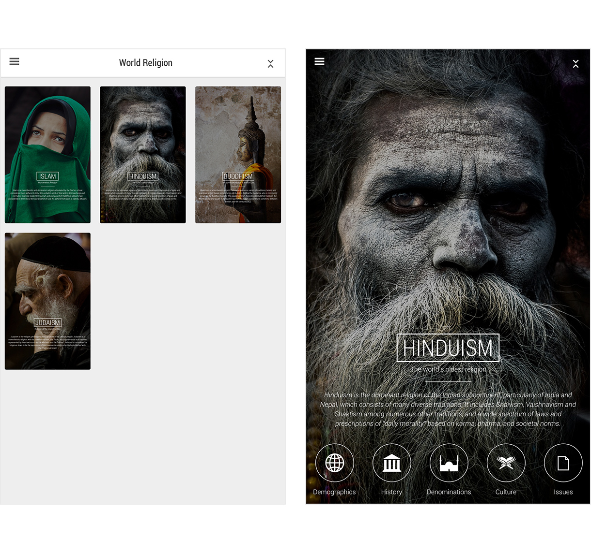
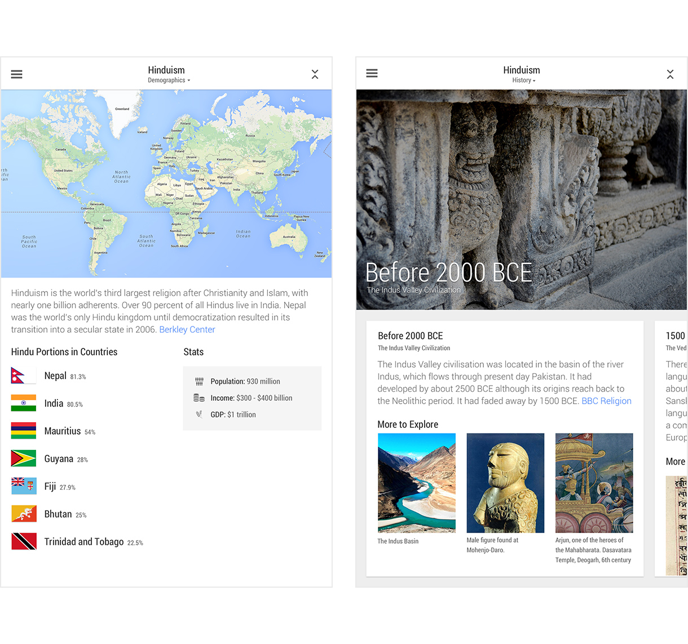
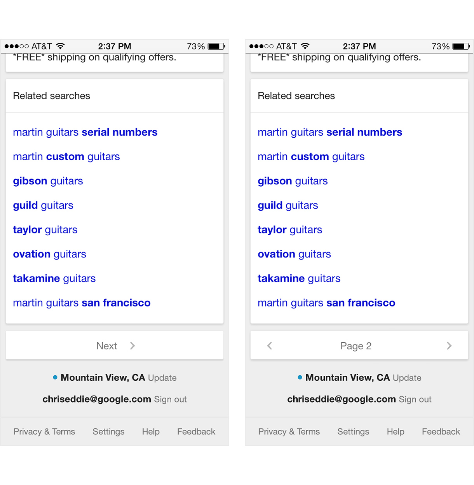
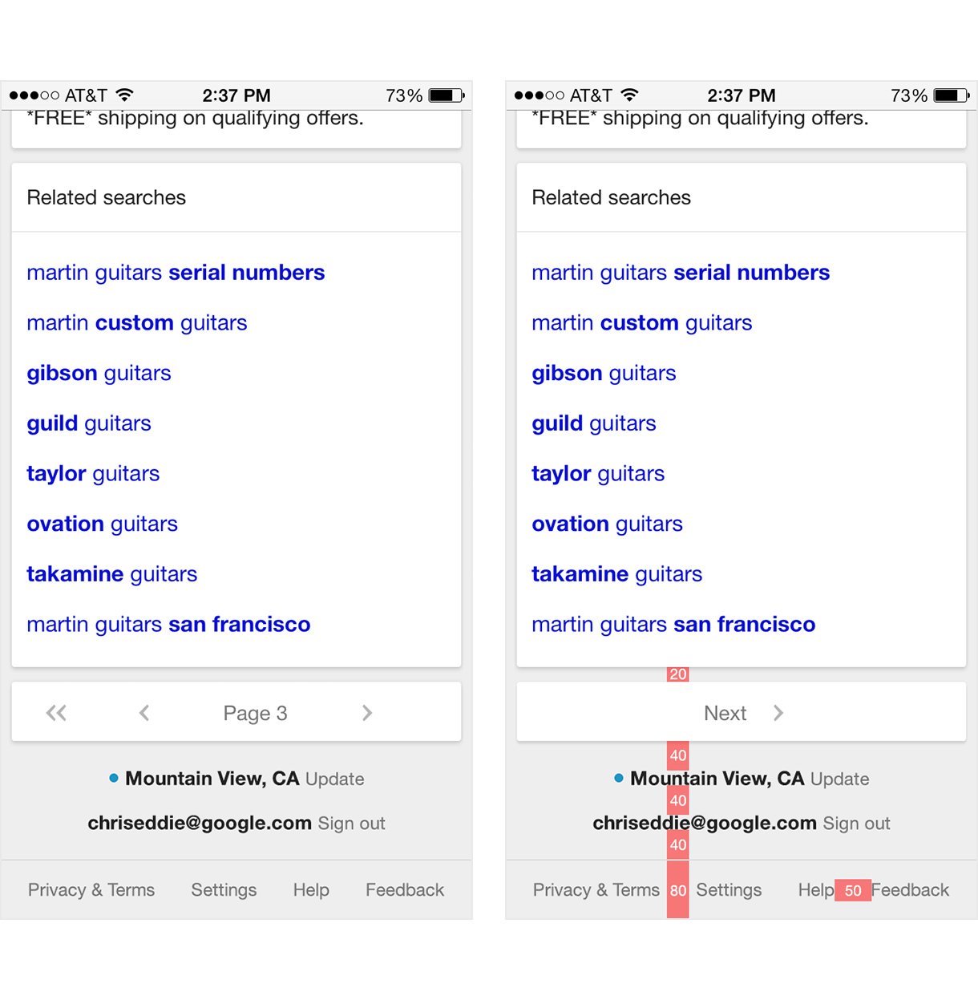
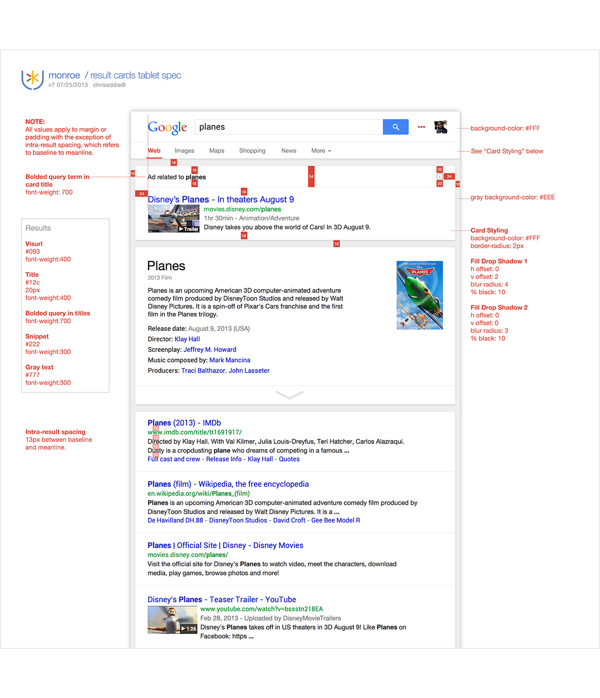
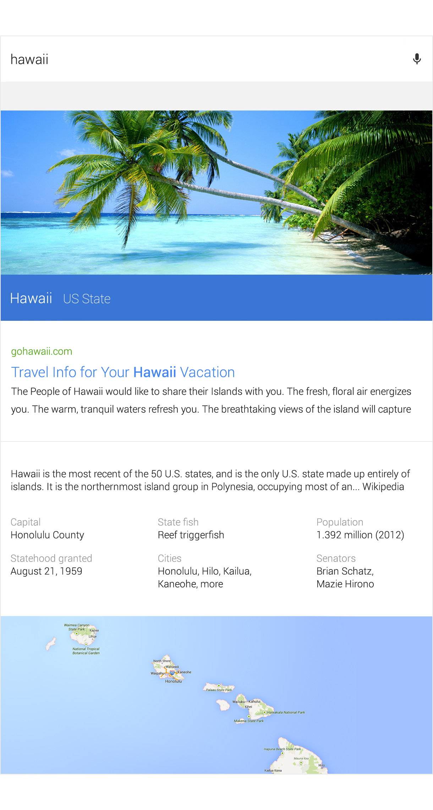

chriseddie.com / Google
chriseddie.com / Google
Immersive Knowledge Panels
The Knowledge UX team (Google Search) was exploring the concept of an immersive search query experience for varying topics. My query was “World Religion”. Once immersed in the knowledge panel, users could explore a consistent presentation of information for various subtopics.

Home screen and a cover of subtopic.
Once a user had immersed in a sub topic, information was rolled up into information paths, such as Demographics and History. This content was comprised of top search results from trusted sources.

Subtopic information paths.
Search Pagination Redesign
Working as a designer on one of the world’s most trafficked pages on the internet came with many challenges. Redesigning search pagination on mobile was a seemingly small, but monumental effort.

Spacebar design.
All pagination controls rolled up into a single card which made for a clean presentation and an easily tappable surface.

Progressive disclosure and redlines.
Cards on Search
One of the largest launches I was able to participate in was adding “cards” to Google Search. I worked closely as the point of contact with a team of engineers to make sure every detail was perfect.

Redline sent to engineers to "cardify" Search.
"Monroe"
Monroe was an exploration in beautifying Google Search. Much of the exploratory thinking that came from this project inspired what became Material Design.

A still image from a Monroe prototype.
Date: 2013 - 2014
Company: Google
Role: UI Designer
Team: Knowledge UX